Curso de Google Documentos › Insertar › Lección 25
Lección 25 de 53 · menú Insertar
Cómo poner emojis y caracteres especiales en Google Docs
Fecha del video: · Programado
¿Querés poner emojis y símbolos en Google Docs? Con Insertar → Símbolos → Emoji elegís o buscás un emoji, y con Insertar → Símbolos → Caracteres especiales agregás flechas, formas o tildes: por categoría, por su código Unicode o dibujándolo. Acá lo vemos paso a paso.
En el ejemplo usamos el documento «Lista de compras»: le agregamos dos peras 🍐 y una flecha →, y al final las borramos, así el documento quedó como estaba.
Paso 1: Insertar → Símbolos → Emoji
Arriba, en la barra de menús, tocá Insertar y después Símbolos. Se abre un submenú con dos opciones: Emoji (con el ícono de la carita) y Caracteres especiales (con el ícono Ω). Para los emojis elegí Emoji.
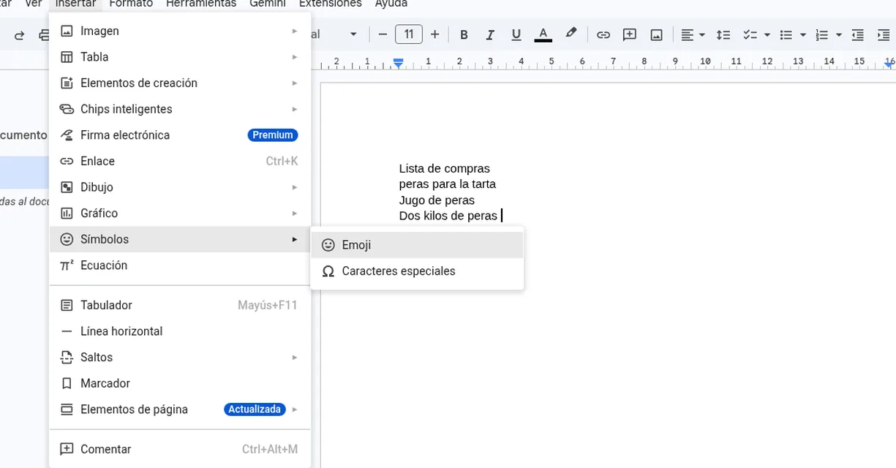
Paso 2: el selector de emojis
Se abre el selector de emojis justo donde está el cursor. Arriba tiene el buscador («Buscar») y una fila de íconos con las categorías; abajo, los emojis de la categoría elegida (por ejemplo «Emoticonos y emociones»).
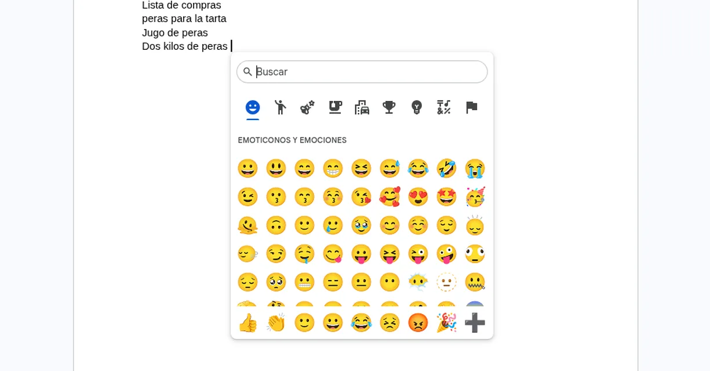
Paso 3: buscá el emoji y tocalo
Escribí en el buscador lo que querés. En el ejemplo escribimos pera y apareció un solo resultado: 🍐. Hacé clic en el emoji.
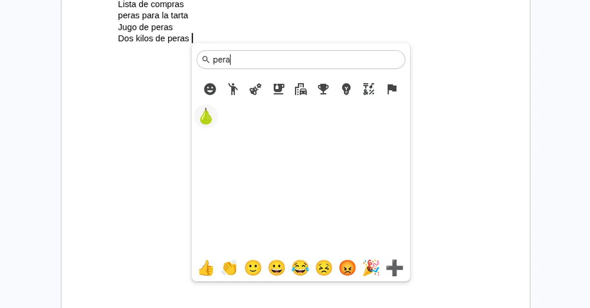
El emoji queda en el texto, donde estaba el cursor.
Paso 4: el atajo de los dos puntos
Hay una forma más rápida: escribí dos puntos y la palabra, sin espacio (en el ejemplo :pera). Aparece una lista «Emojis» con las opciones; apretá Intro para insertar la primera.
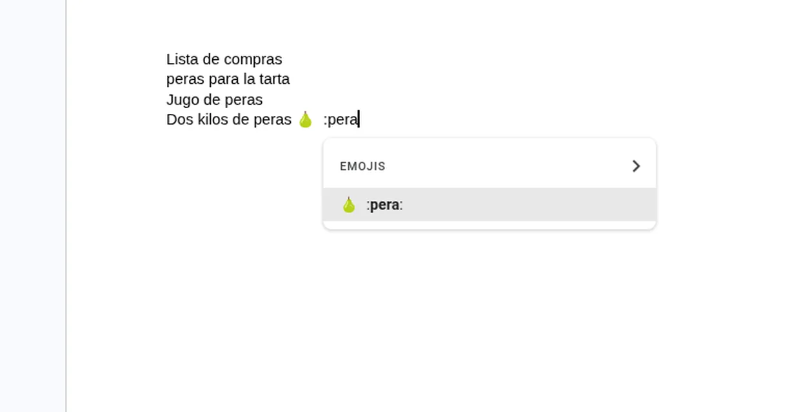
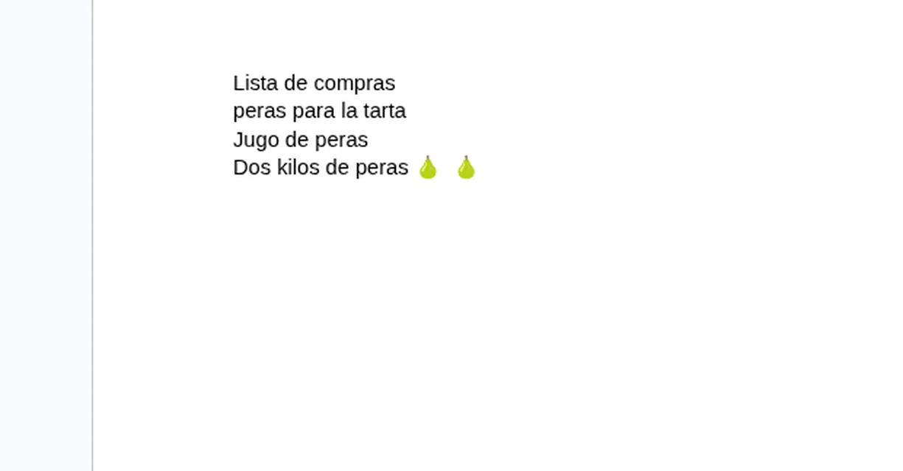
Si no querés que aparezca esa lista cada vez que escribís dos puntos, andá a Herramientas → Preferencias y desmarcá «Insertar emojis con el carácter de dos puntos». La ayuda de Google menciona además escribir @emoji y apretar Intro para abrir el selector.
Paso 5: Insertar → Símbolos → Caracteres especiales
Para flechas, formas, letras con tilde u otros símbolos, andá a Insertar → Símbolos → Caracteres especiales.
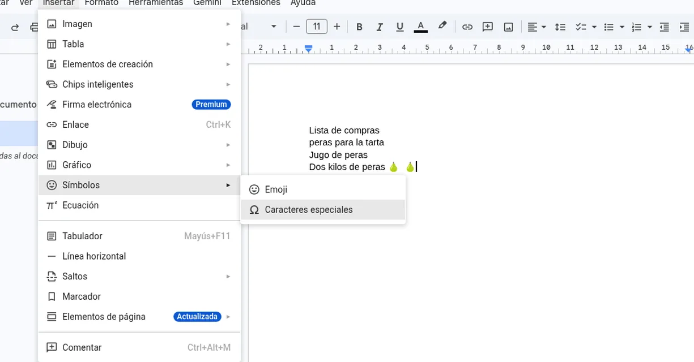
Paso 6: elegí por categoría
Se abre la ventana Insertar caracteres especiales. Con los desplegables de la izquierda elegís la categoría: en el ejemplo, Símbolo y Flechas. Abajo aparece la grilla de caracteres; hacé clic en uno para agregarlo al documento.
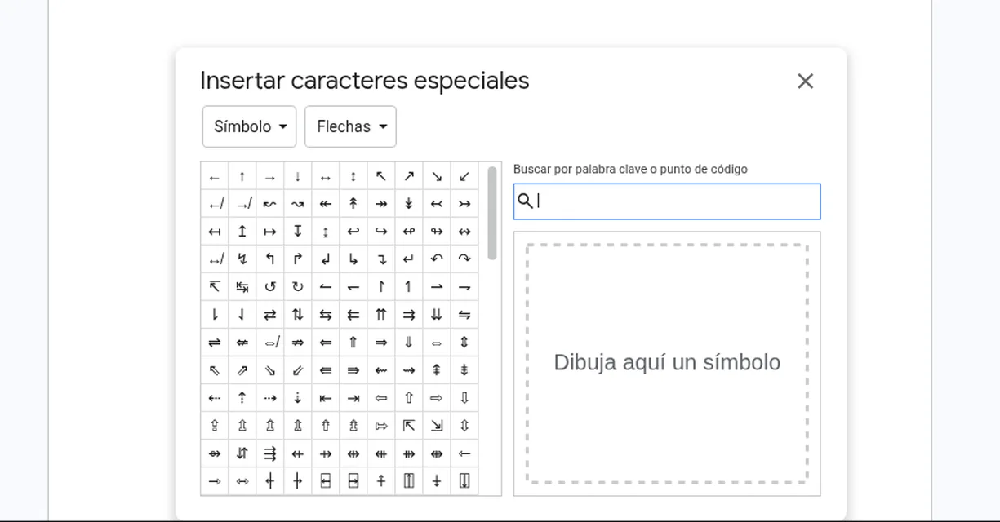
Paso 7: buscalo por su código Unicode
En el buscador de la derecha («Buscar por palabra clave o punto de código») podés escribir el código Unicode del carácter. Escribimos 2192 y apareció la flecha → (RIGHTWARDS ARROW, U+2192). El desplegable cambia a «Resultados de la búsqueda». Hacé clic en el carácter.
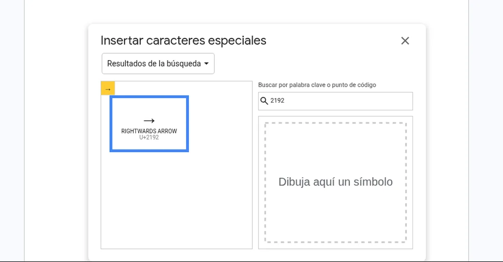
Paso 8: o dibujalo
Si no sabés el nombre ni el código, dibujalo con el mouse en el cuadro Dibuja aquí un símbolo. A la izquierda aparecen los caracteres parecidos; tocá el que buscás. Con la flechita circular de abajo borrás el dibujo.
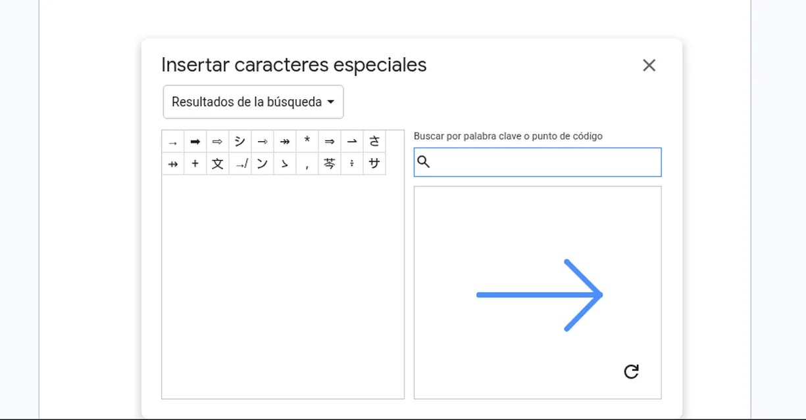
El carácter queda en el texto, donde estaba el cursor.
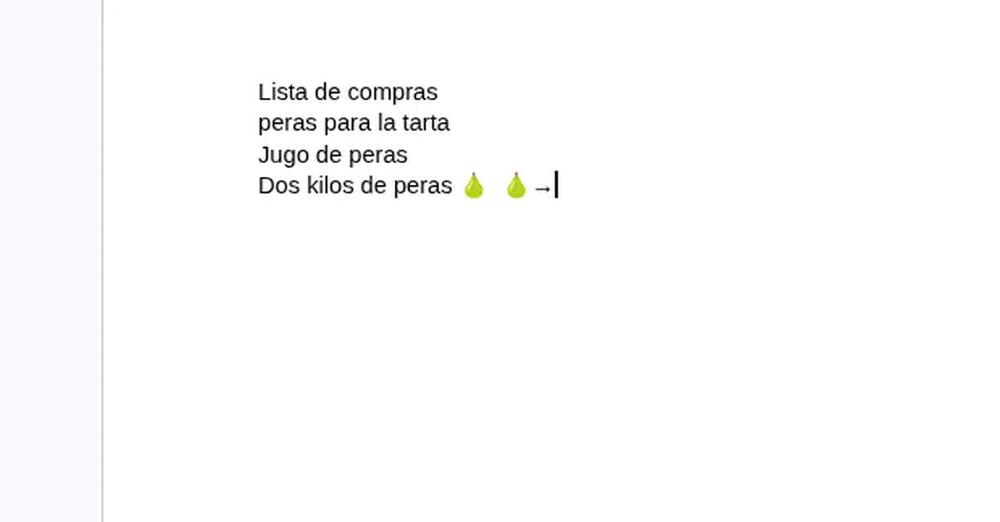
Ojo: según la ayuda de Google, en Hojas de cálculo no se pueden insertar caracteres especiales directamente: copialo en un documento y pegalo en la celda. Al final borramos los emojis y la flecha y el documento quedó como al principio.
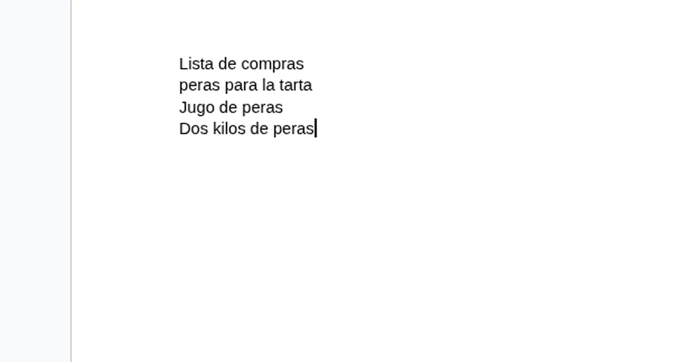
Fuente oficial: Inserta emojis y caracteres especiales. Mirá también el menú Insertar completo (video: Google Docs: menú Insertar paso a paso) y la lección anterior, Gráficos.
Mirá el Short
Estreno del Short: 04/12/2026 · 09:00 (hora Argentina)
Video relacionado: Google Docs: menú Insertar paso a paso (tutorial completo) — el video largo del menú Insertar (verlo en YouTube).
Fuente oficial: Ayuda de Editores de Documentos de Google. Capturas propias en un documento de ejemplo («Lista de compras»). El video usa voz generada con IA.